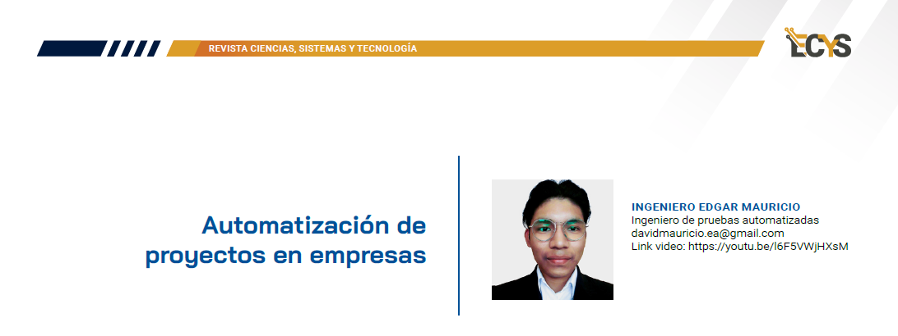

9 Automatización y proyectos inteligentes

YouTube: https://youtu.be/l6F5VWjHXsM
9.1 Entrevista
¿Cómo se pueden identificar los procesos candidatos para la automatización en una empresa?
Procesos repetitivos: debemos identificar procesos que se hacen de manera manual y repetitiva. Por ejemplo seguimiento de gastos.
Procesos estables: debemos automatizar procesos que son estables y que no están sujetos a cambios constantes. Esto debido a que si una determinada funcionalidad está cambiando constantemente, el esfuerzo de mantener la automatización funcionando será igual o mayor que hacerlo de manera manual.
Procesos que aporten valor a la empresa: debemos automatizar procesos con alto volumen de transacciones y que sean prioritarias para la organización.
¿Cuál es su enfoque para evaluar el retorno de inversión (ROI) al implementar la automatización de procesos?
Tiempo: al tener automatizados los procesos, estos se ejecutarán de manera muchos más rápida. Sin exagerar un 80% más rápido al tener una estrategia correcta.
Recurso humano: las personas que antes se encargaban de ejecutar manualmente los procesos que ya están automatizados, ahora pueden enfocar esfuerzos en realizar otras actividades de mayor valor.
Ahorro de costos: al tener los procesos automatizados el margen de error humano se vuelve prácticamente nulo.
¿Puede proporcionarme un ejemplo específico de un proceso que haya automatizado y cómo impactó positivamente en la eficiencia operativa?
La automatización de pruebas dentro del área de control de calidad.
Actualmente como QA probamos los productos de software a través de pruebas automatizadas que cubren varios niveles, como lo puede ser pruebas unitarias, de integración e interfaz gráfica de usuario.
Al tener todas nuestras pruebas automatizadas, nosotros como QA brindamos un certificado de calidad de manera pronta y oportuna haciendo que el software se libere mas rápido a producción y permita a los usuarios finales disfrutar de estas nuevas características.
¿Cómo aborda los desafíos relacionados con la resistencia al cambio por parte de los empleados al implementar soluciones de automatización?
Este es un desafío común en las organizaciones.
Comunicación clara y efectiva: Se le debe informar a los empleados los cambios que están sucediendo y cómo es que esto beneficiará a la organización y a los propios empleados.
Involucrar a los empleados desde el inicio: Los empleados deben participar activamente en el proceso de cambio, también se debe tomar en cuenta sus opiniones y comentarios. Y por supuesto se les debe dotar de las habilidades necesarias para utilizar estas soluciones automatizadas.
Los líderes son agentes de cambio: los coordinadores, jefes, y directores deben ser los que tienen que fomentar el proceso de cambio ya que ellos son los que pilotean los diferentes equipos de trabajo.
¿Cuáles son las principales tecnologías que considera al diseñar soluciones de automatización de procesos?
Estas tecnologías van a depender de las necesidades y objetivos de cada organización.
Sin embargo para responder la pregunta aquí realmente tenemos un abanico de posibilidades como:
RPA (Automatización robótica de procesos): robots programados para realizar tareas repetitivas
Automatización de software: software para automatizar procesos manuales (pruebas de software, despliegue de infraestructura, monitoreo)
Machine Learning: aprendizaje automático para tomar decisiones complejas
¿Cómo garantiza la seguridad y la integridad de los datos al implementar sistemas de automatización?
Para garantizar la seguridad e integridad de los datos se deben implementar estrategias sólidas de protección de la información. Estas estrategias pueden ser:
- Utilizar cifrado
- Enmascaramiento de datos
- Cuando se requiera exponer información podemos hacer uso de información dummy
¿Cuál es el enfoque para la documentación y monitoreo de los procesos automatizados en una empresa?
Todo proceso que es automatizado debe estar debidamente documentado para que las personas interesadas puedan revisarla y logren comprender cuál es su funcionamiento para que posteriormente puedan manipularlas.
A través del monitoreo lograremos interpretar todas las métricas generadas por la automatización para que en base a eso realicemos acciones correctivas o de prevención.
¿Cómo gestiona la escalabilidad de las soluciones de automatización para adaptarse al crecimiento y cambios en la empresa?
La escalabilidad debe ser una propiedad mandatoria de cualquier sistema automatizado, este debe ser capaz de satisfacer los nuevos requerimientos que se van creando según la evolución de la empresa.
Es por eso que antes de inclinarnos por una u otra herramienta de automatización debemos realizar un profundo análisis sobre nuestras necesidades y en base a eso adquirir soluciones personalizadas que permitan expandirse y evolucionar según las demandas cambiantes.
¿Cómo evalúa y mejora continuamente los procesos automatizados para garantizar su eficacia a lo largo del tiempo?
Análisis sobre las métricas creadas por los sistemas de automatización y constante retrospectiva sobre puntos de mejora que se puedan identificar con lo que se realiza actualmente.
Mensaje del Ing. Edgar Mauricio
Entendamos que la automatización es una herramienta más de trabajo y no un sustituto de nosotros como empleados así que debemos aprovecharla al máximo para aumentar nuestra productividad.